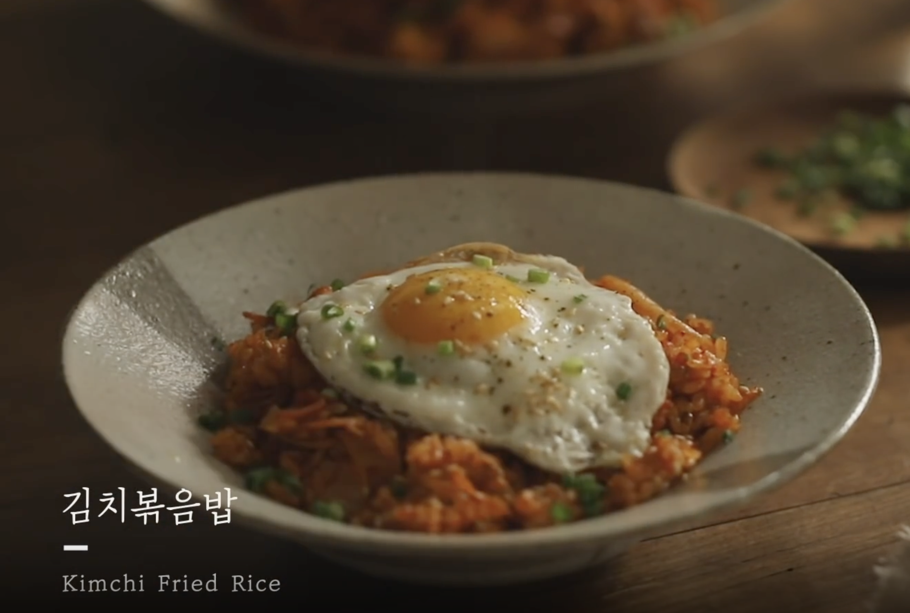

만개의 레시피
Youtube
메일
웹
자취생 김치볶음밥 레시피
[ 사진 출처 ]
[ 김치볶음밥 재료 ]
- 햇반 한 공기
- 묵은 김치
- 설탕/고춧가루
- 대파
- 참치 작은 캔 하나
- 달걀 1개
- 식용유
- 간장
- 미원(선택)
[ 조리 방법 ]
- 파를 송송 썰어 준비한다.
- 가스 불 키고 후라이팬에 식용유를 적당량으로 두른다.
- 불을 중불로 조절하고 후라이팬에 파를 넣어 볶는다.
- 파 향이 나면 참치를 넣어 볶는다.
- 설탕 한 스푼과 간장 한 스푼만 넣고 다시 볶는다.
- 준비한 김치를 썰어 넣고 불을 중약불로 조절한 후 볶는다.
- 고춧가루를 넣고 볶다가 햇반 한 공기를 넣어 불을 중불로 조절한 후 볶는다.
- 다 볶아지기 직전에 미원 한 꼬집만 넣어서 볶으면 맛이 더욱더 좋다.
- 다른 후라이팬에 식용유를 두르고 계란후라이를 만든다.
- 접시에다가 완성된 김치볶음밥을 붓고, 계란후라이를 얹으면 완성이다.
- 맛있게 먹는다.
 [ 사진 출처 ]
[ 사진 출처 ]